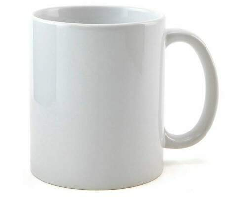
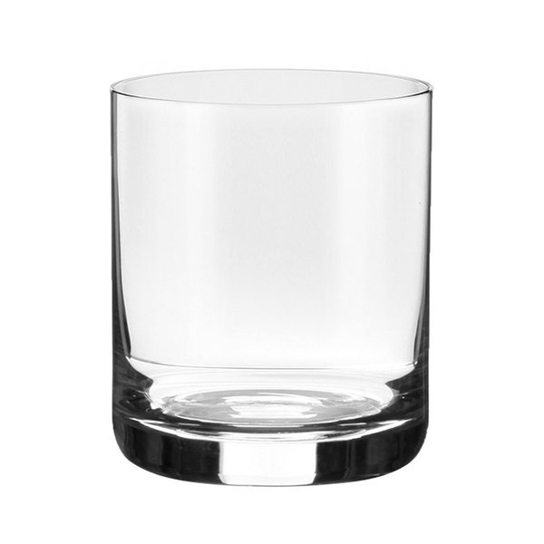
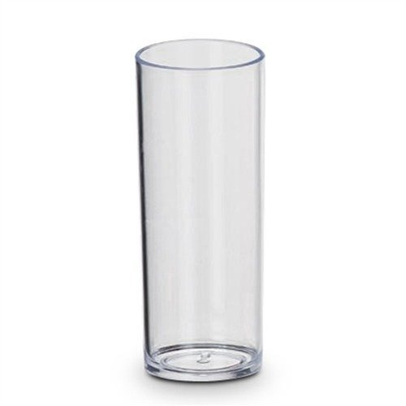

Os copos

Fonte: www.pinterest.com.br
A origem dos copos
A colher é um dos utensílios de cozinha mais antigo já datado,mais novo que a faca e mais velho que o garfo esse utensílio é um dos mais tradicionais talheres de mesa.
As primeiras colheres provavelmente eram feitas com objetos naturais como conchas de animais, cascas de frutas ou pedaços de plantas,quando as colheres começaram a ganhar o formato semelhante ao que temos hoje os matériais utilizado foram os mais diversos como: madeira,metal,prata.
O uso da colher é indispensável em qualquer cozinha e conhecer os seus diversos modelos, a utilização adequada de cada um e também a sua história trará diversos benefícios a sua vida.
Vamos conhecer agora alguns tipos de copos existentes :
Xícara

Fonte: www.magazineluiza.com.br
As xícaras são uma espécie de copo um pouco diferente dos que serão apresentados aqui, geralmente fabricados com porcelana esses utensílios domésticos são destinados ao consumo de bebidas quentes ou frias.
Além disso as xícaras são utilizadas em medidas para receitas e algumas pessoas costumam coleciona-las.
Copo americano

Fonte: www.lojaduartecasapresentes.com.br
O copo americano um dos copos mais populares do Brasil não possui sua origem na terra do tio san como seu nome sugere, ele nasceu aqui mesmo no nosso país.
Desenvolvido pela empresa Nadir Figueiredo desde 1947, sua popularidade se deve a sua versatilidade, sendo ideal para as mais diversos tipos de bebidas.
Seu nome se deve as máquinas norte-americanas utilizadas na empresa que industrializaram o processo e substituiram a fabricação através sa técnica se vidro soprado.
Caneca
Fonte: www.inkmixx.com.br
Esse tipo de copo é geralmente utilizado para tomar bebidas quentes como café ou chocolate numa boa quantidade e para que a pessoa não se queime e tenha uma experiência mais agradavél existe uma espécie de alça nele que serve para segurar o copo.
São fabricadas com os mais diversos tipos de materiais e algumas são personalizadas se tornando um item bem bonito.
Copo de suco

Fonte: www.displal.com.br
Esse é um copo largo com capacidade de armazenamento entre 200 a 400ml, é utilizado para tomar os mais variados tipos de bebidas, principalmente se ela vem acompanhada de muitas pedras de gelo.
Copo shot

Fonte: www.loja.bartenderstore.com.br
Esse é um copo pequeno destinado ao consumo de bebida em um único gole,ideal para bebidas como tequila,rum e vodka.
Copo On the rocks
Fonte: www.casaaffonso.com.br
Conhecido como copo para wisky, ele é um copo baixo sem haste com a boca e bojo largos utilizado para servir bebidas que precisam de muito gelo.
Copo long drink
Fonte : www.tedcamisas.com.br
Esse é um copo longo e fino muito utilizado em festas e eventos para servir bebidas como água,suco e refrigerantes.